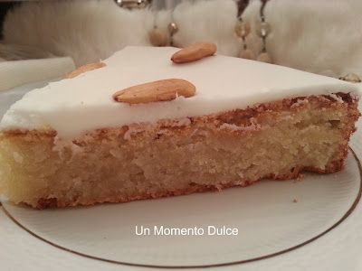
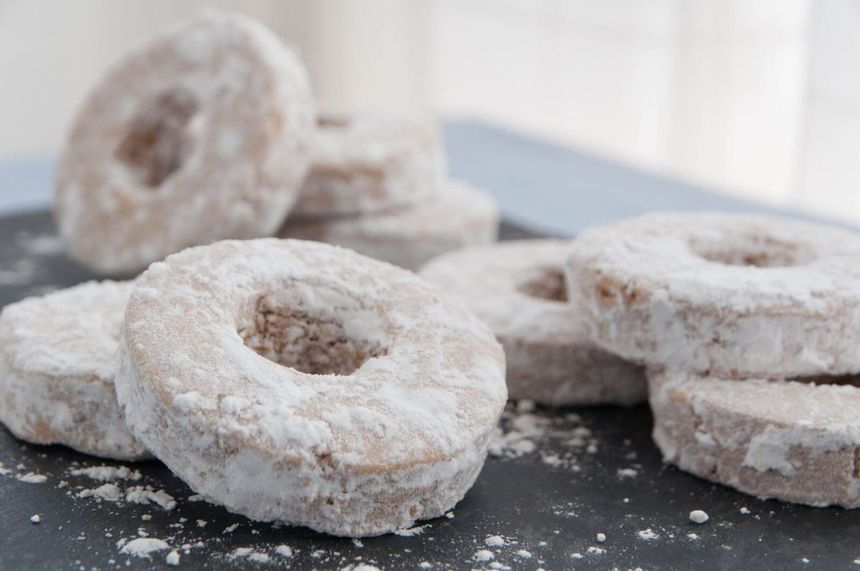
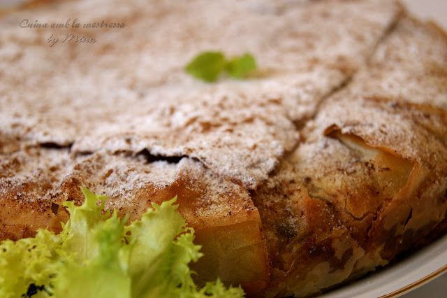
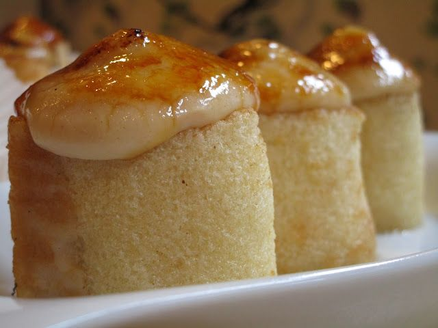
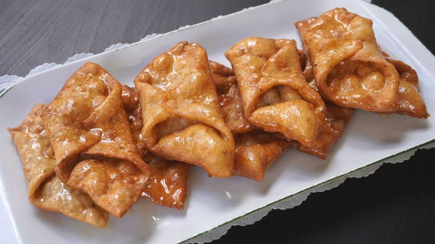
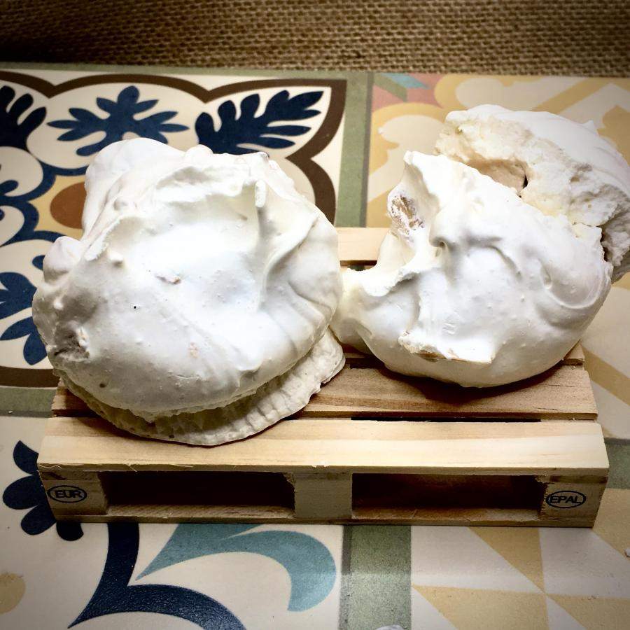
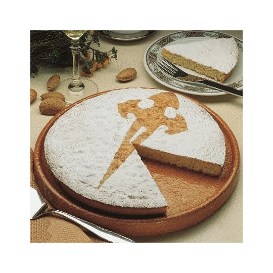
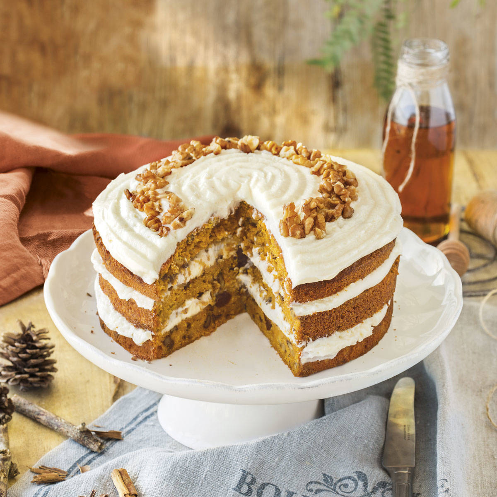
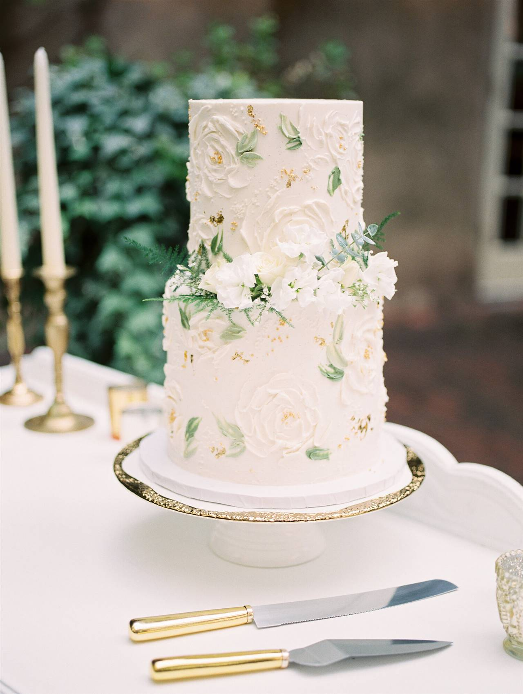

Pionono
Bizcocho enrollado con crema dulce, típico de Santa Fe, cerca de Granada.
Recetas tradicionales hechas con cariño en el corazón de Granada. Torrijas, piononos, y mucho más.
Ver productosPanadería familiar con más de 30 años elaborando dulces granadinos con recetas transmitidas de generación en generación. Ubicados en pleno corazón del Albaicín, nuestra pastelería mantiene viva la tradición de los dulces árabes y cristianos que han caracterizado a Granada durante siglos.
Los dulces granadinos son el reflejo de nuestra rica historia cultural, donde las tradiciones andalusíes y cristianas se fusionan en sabores únicos. Desde los delicados soplillos de la Alpujarra hasta los famosos piononos de Santa Fe, cada receta cuenta una historia de nuestra tierra.
Elaboramos todos nuestros productos de manera artesanal, seleccionando los mejores ingredientes locales: almendras de la Alpujarra, miel de las sierras granadinas y especias tradicionales que dan ese toque característico a nuestros dulces.
Sabores tradicionales de Granada, elaborados cada día
Bizcocho enrollado con crema dulce, típico de Santa Fe, cerca de Granada.

Torrijas caramelizadas con canela y limón, perfectas para compartir.

Cuajada tradicional de Carnaval: suave y cremosa, aromatizada con miel, canela y piel de limón.

Dulce frito tradicional con miel, canela y una pizca de ajonjolí.

Delicados dulces de merengue con almendra, típicos de la Alpujarra granadina.

Postre tradicional granadino elaborado con pan, leche, canela y limón.

Torta tradicional de Motril, densa y aromática, hecha con almendras y canela.

Pequeños rosquillos con toque de vino y licor, crujientes por fuera y tiernos por dentro.

Pastela de tradición morisca: masa fina rellena de almendras, miel y especias.
Ofrecemos una selección de dulces sin gluten elaborados siguiendo estrictas medidas de prevención de contaminación cruzada: área de trabajo separada, utensilios y bandejas exclusivos, harinas certificadas y desinfección continua. A continuación encontrarás algunos ejemplos preparados con todas las garantías.

Bizcocho sin gluten relleno de crema, elaborado en zona separada.

Pestiños fritos en aceite limpio y rebozados con harina sin gluten certificada.

Merengues y soplillos preparados con ingredientes libres de gluten y en área controlada.
Encargos de tartas personalizadas: ofrecemos diseños a medida para celebraciones. Requisitos y condiciones:
Variaciones de precio: dependemos del tamaño, ingredientes y nivel de personalización. Consultar presupuesto al hacer la reserva.

Desde 45€ — aviso mínimo 5 días.
Presupuesto a medida — aviso mínimo 10 días; posible recargo por diseño complejo.

Disponibles previa consulta; pueden tener variación de precio.

Servicio especial para bodas y grandes eventos: diseño personalizado, pruebas de sabor (bajo cita) y coordinación con el catering si se requiere. Plazo mínimo 30 días para encargos nupciales; presupuesto personalizado y condiciones especiales de entrega y montaje si es necesario.
Realiza tu pedido por teléfono o WhatsApp y recógelo en nuestra tienda. Solo recogida en tienda, no realizamos repartos a domicilio. En un futuro cercano empezaremos a ofrecer reparto a domicilio para ciertos productos — anunciaremos zonas, condiciones y plazos en nuestra tienda y redes sociales.